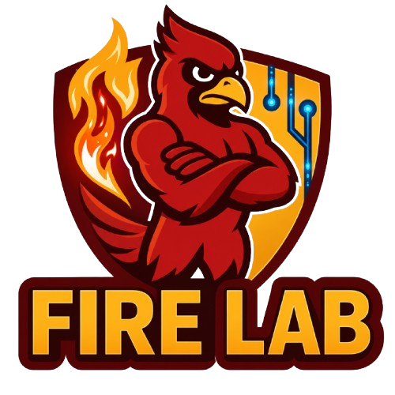

System Security
Identifying hidden attack surfaces in real-world systems and building robust defenses against emerging threats.
FIRE Lab stands for Forensics Innovations in Reverse Engineering Lab. In FIRE Lab, we conduct research at the intersection of system security, program analysis, and artificial intelligence. Our work is driven by a central question: how can we build intelligent systems that remain secure, trustworthy, and dependable when deployed in the real world?

Identifying hidden attack surfaces in real-world systems and building robust defenses against emerging threats.
Forensic analysis of AI-enabled systems, model behavior, adversarial manipulation, and root-cause analysis of failures.
Automated reasoning for understanding and securing complex software via binary and symbolic analysis.
Security and privacy of Internet-of-Things devices, smart environments, medical devices, and cyber-physical systems.
Resilience and security for industrial control systems, healthcare infrastructure, and mission-critical environments.
Security of quantum supply chain, quantum programming stacks, and quantum computing infrastructure.
Loading the latest publications from publications.html.
We welcome motivated students and collaborators interested in System security, cyber-physical systems, AI security, and trustworthy intelligent infrastructure.